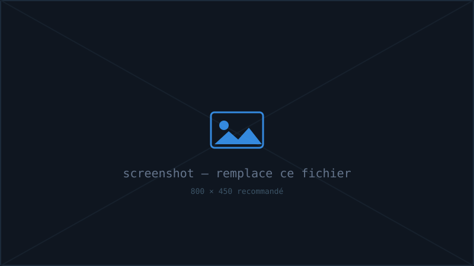

En bref
Un stage qui m'a donné le goût de la sécurité opérationnelle — et qui a débouché sur mon alternance RSSI.
Le contexte
Au sein de l'équipe Sécurité Opérationnelle (SecOps) de Crédit Agricole Assurance, j'ai découvert le fonctionnement de la sécurité à l'échelle d'un grand groupe : des process normés, des vulnérabilités à suivre en continu, et une exigence forte de reporting.
Mes missions
📑
Procédures groupe
Création et formalisation de procédures de sécurité applicables à l'échelle du groupe.
🛡️
Suivi des vulnérabilités
Suivi régulier de l'état des vulnérabilités et de leur prise en charge.
📈
Réalisation de KPI
Construction d'indicateurs clés pour mesurer et piloter la posture de sécurité.
🗣️
Animation de réunions
Préparation et animation de réunions avec les parties prenantes.
Ce que j'en retire
- Une première immersion réussie dans la cybersécurité d'entreprise.
- La rigueur documentaire : une procédure claire vaut mieux qu'un réflexe individuel.
- Un tremplin direct vers mon alternance RSSI chez Spirica.
Galerie
visuels & schémas
⚠️
À compléter : dépose tes visuels dans
assets/img/spirica/ (ou crée un dossier dédié) et remplace les src.
Aucune donnée interne/confidentielle — schémas et exemples anonymisés uniquement.
KPI sécurité — à remplacer
Procédure — à remplacer